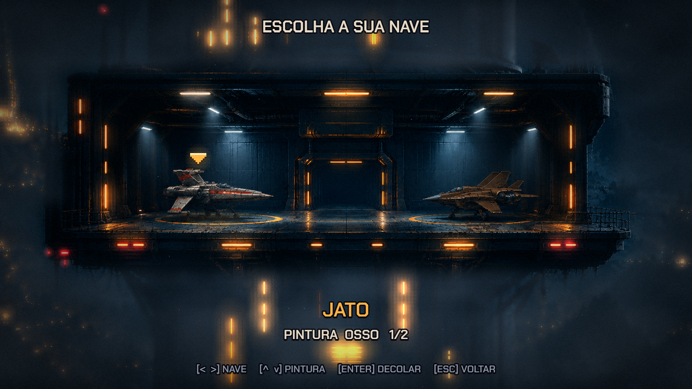
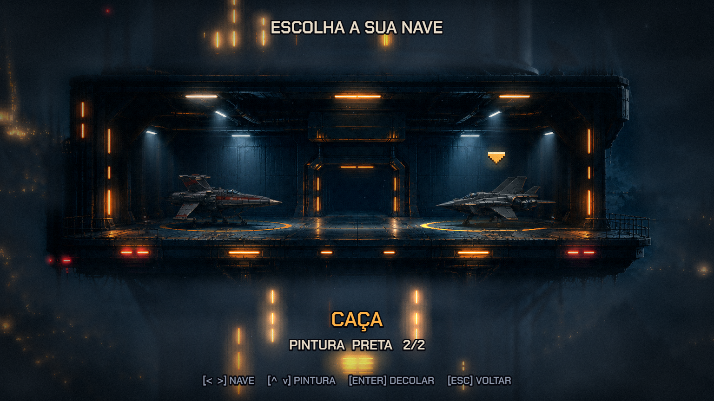
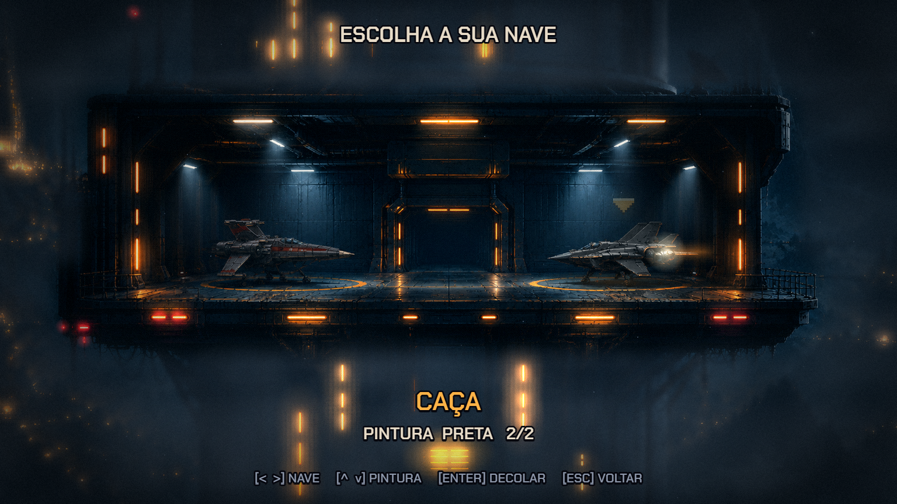
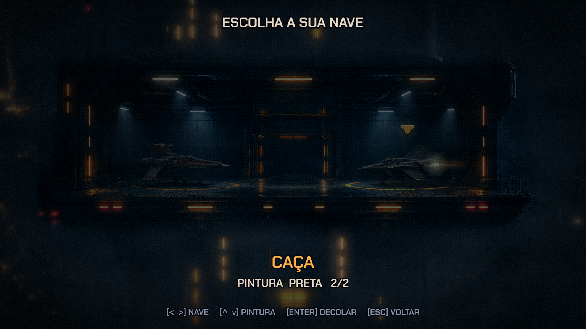
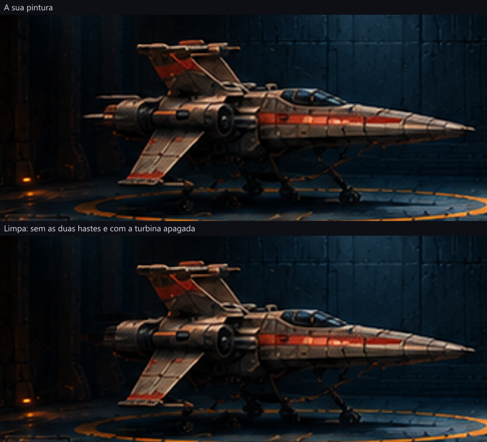
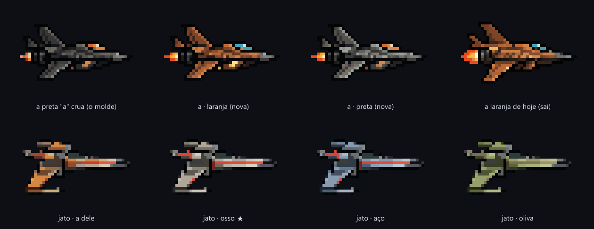
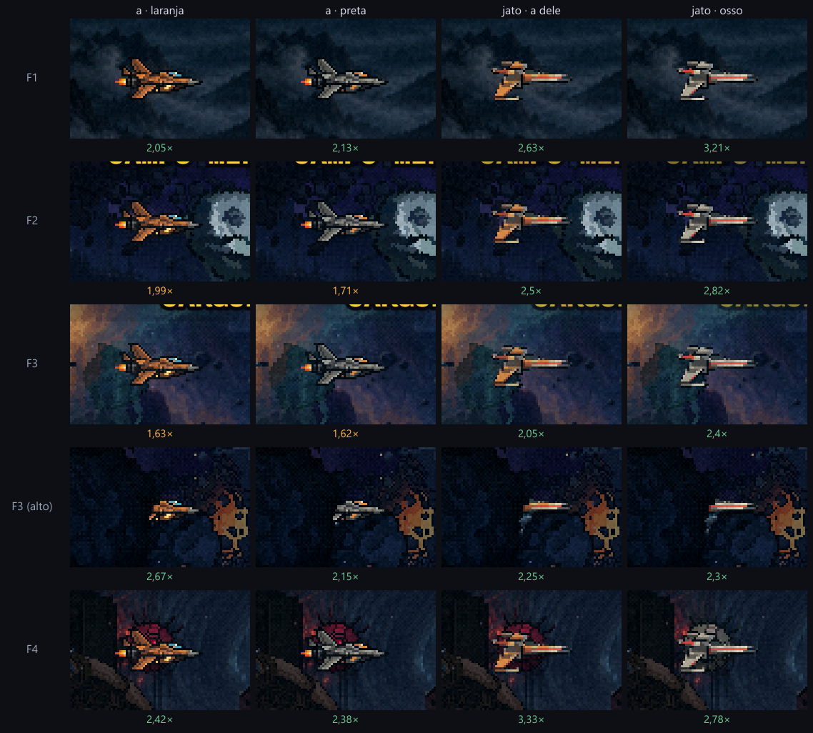
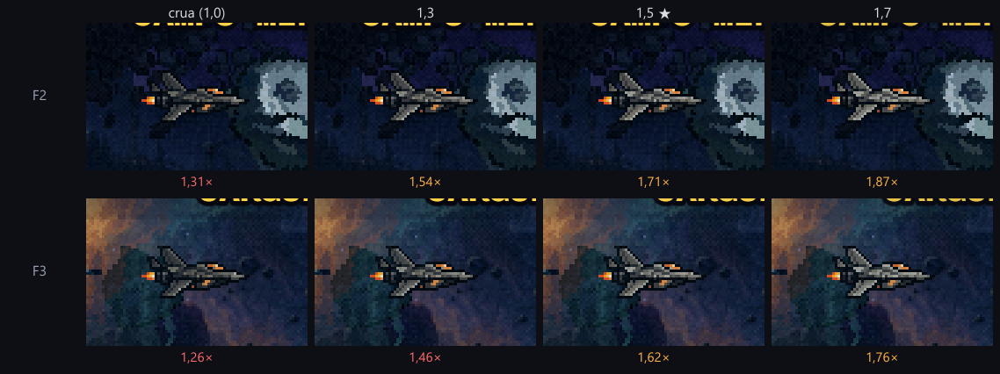
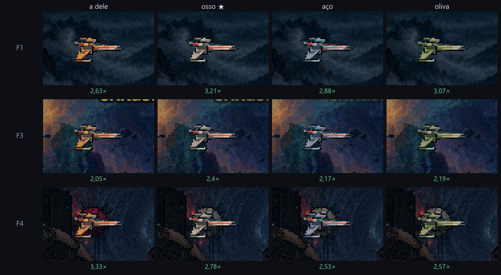

As naves do hangar
25/10/2026 · ← a escada (substituída) · A cena do hangar no topo; as decisões das naves, de antes, embaixo.
A cena do hangar, antes da F1
A limpeza ficou boa, então montei a cena. Do COMEÇAR do menu você cai no hangar.
- A seta âmbar fica sobre a nave escolhida. < > leva a seta de uma nave à outra.
- ^ v troca a pintura, e a nave estacionada é repintada na hora, numa varredura.
- ENTER acende o motor da escolhida, o anel do pad estoura, a tela fecha e a F1 começa com essa nave.
- ESC volta ao menu.
- Os atalhos 1/2/3 do menu continuam indo direto para a fase.
A névoa: fora do bloco do hangar, a sua pintura vai para baixo de uma névoa pesada, mais densa quanto mais longe do bloco. Dela só atravessam as luzes: as faixas da torre, as cidades do vale e os faróis. A baia fica nítida.
A vida, no nível do menu:
- faixas de bruma correndo atrás do bloco;
- halos respirando nas luzes de fora, e as pequenas tremulando;
- faróis vermelhos piscando;
- cones de luz fria descendo das lâmpadas do teto, com poeira dentro;
- o anel do pad escolhido aceso e a outra nave na sombra.




A nave limpa

A "a", à direita, também tem uma haste fina saindo do motor (o cano comprido atrás dos bocais). Não mexi, porque você falou só da esquerda. Se quiser, tiro do mesmo jeito.
O balanço saiu de todas as naves
- A "a" não balança. Ela tem só a chama, em 8 quadros.
- O jato subia e descia 2 px nos quadros dele. Travei o corpo pelo nariz, a partir dos quadros originais de 04/10, e redesenhei a mesma chama B. As asas continuam batendo. O jato de osso e a chama azul saíram dos mesmos quadros.
- A manta continua nadando: o movimento dela são as nadadeiras, não um flutuar.

O que eu preciso de você
- Ver o filme e jogar a cena: COMEÇAR no menu (http://localhost:5173).
- Os nomes na tela: deixei JATO e CAÇA (para a "a"). Se tiver outros nomes, é uma linha.
- A haste do motor da "a": fica ou sai.
Antes: as quatro escolhas
Decidido: a "a" no molde da preta, em laranja e preta; o jato na pintura dele e na de osso (a sua escolha). Só o visual muda: as quatro têm a mesma hitbox, a mesma arma e as mesmas cartas.


- Todas passam de 1,5× em todas as fases. O ponto mais difícil é a F3: a "a" fica em 1,6× e o jato entre 2× e 2,4×.
- A preta foi clareada 1,5×, a mais escura que passa em todo lugar (com 1,3, a F3 dá 1,46×).
- Para reparar jogando: o jato de osso perto dos anéis de osso da F4.


Como saiu
- A cena:
src/scenes/HangarScene.ts(relógio, teclas e texto) esrc/hangar/(o cenário vivo na camada HD, os números, o estado). As camadas são descripts/_hangar/_camadas.mjs, e a limpeza de_limpar-nave.mjs. - Os testes:
scripts/_hangar/_testar-hangar.mjs(o fluxo com teclas de verdade: menu, hangar, ←→↑↓, ENTER, a F1 na nave escolhida, ESC) e_ver-hangar.mjs(as fotos, também sem a camada HD). Oprobe-menupassa pelo hangar. - As naves:
scripts/_naves/_nave-molde-preta.mjs(a "a"),_jato-sem-balanco.mjs(o jato travado) e_pintar-jato.mjs(o osso). O teste é_testar-nave-unica.mjs. - Spec:
specs/2026-10-25-cena-do-hangar-design.mdespecs/2026-10-25-naves-do-hangar-design.md.